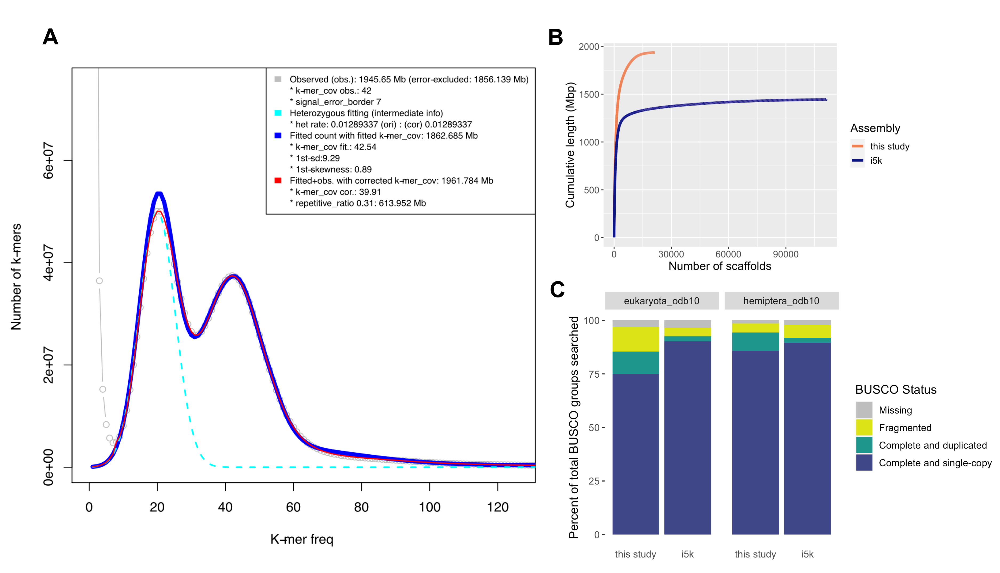
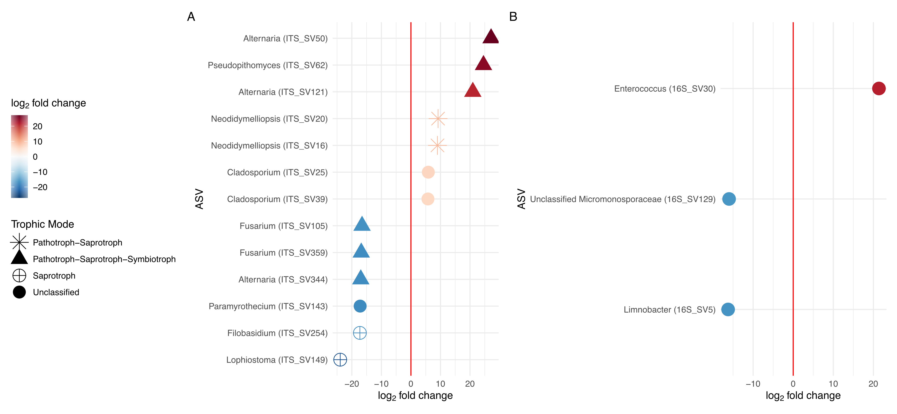

		<!-- Main -->
			<article id="main">
					
				<!-- One -->
					<section class="wrapper style4 container">
					
						<!-- Content -->
							<div class="content">
								<section>
										<header>
										<h3><strong>Glassy-winged Sharpshooter
</strong></h3> </header>


<div class="row">


<div class="7u">
<p>Homalodisca vitripennis, aka the glassy-winged sharpshooter (GWSS), is a xylem feeding leafhopper, invasive to California and an important agricultural pest as a vector of Xylella fastidiosa. As part of my postdoc work with Dr. Jason Stajich, I worked on genome improvements, as well as investigating genomic and microbial mechanisms that might lead to insecticide resistance.
	

</p>

</div>

	<div class="5u">
		<a class="image featured special"></a>
	</div>
</div>
	

<div class="row">
	
	<div class="6u">
		<a class="image featured special">
			
			<br>
			<p> Genome assembly assessment and comparison. (A) The red line represents the fitted k-mer model which is used to estimate the genome size. (B) Plot comparing our draft genome to the previous reference genome (i5k) in terms of cumulative sequence length. (C) BUSCO completion status for both our draft genome and the i5k reference. 		
</p>
		</a>
	</div>
	<div class="6u">
		<p> As part of our genome improvement efforts, we used a combination of Oxford Nanopore long-read sequencing technology combined with Illumina sequencing reads to generate an improved assembly and first-pass annotation of the whole genome sequence of a wild-caught Californian (Tulare County) individual of GWSS. This improved genome enabled us to identify orthologous candidate genes of interest for future experimental work including phenotypic marker genes like white. This work also enabled our collaborative CRISPR work and follow-up studies focused on insecticide resistance.  </p>
	</div>


<div class="row">
	
	<div class="6u">

	<p> Recently wide-spread insecticide resistance has been detected in populations of GWSS in the southern portions of California’s Central Valley. In order to better understand potential mechanisms of resistance, we profiled wild-caught insecticide-resistant and relatively susceptible GWSS transcriptomes. We identified 81 differentially expressed genes with higher expression in resistant individuals, including a highly expressed cytochrome P450 gene with similarity to CYP6A9 that might be a good target for mitigation efforts. We also observed an over-enrichment of GO terms representing functions supportive of roles in resistance mechanisms (cytochrome P450s, M13 peptidases, and cuticle structural proteins).  </p>
	</div>

	<div class="6u">
		<a class="image featured special">
			
			<br>
				<p> Gene concept networks showing resistance landscape. (A) Over-enriched GO terms from  genes with higher expression in resistant GWSS. (B) Over-enriched GO terms from genes with higher expression in susceptible GWSS populations. Each cluster is annotated with the dominant gene function (black boxes)		
		</p>
		</a>
	</div>
</div>

<div class="row">
	
	<div class="6u">
		<a class="image featured special">
			
			<br>
				<p> Differentially abundant ASVs linked with GWSS insecticide resistance status. For fungal ASVs, predicted trophic modes are shown as shapes. A positive log2fold change indicates the ASV had higher abundance in insecticide resistant GWSS, while a negative log2fold change indicates it was higher in insecticide-susceptible GWSS.
	
		</p>
		</a>
	</div>
	
	<div class="6u">

	<p> While studies have focused on bacterial pathogens or known symbionts of GWSS, little work has been done at the scale of the microbiome (the bacterial community) or mycobiome (the fungal community). We characterized the mycobiome and the microbiome of GWSS across Southern California and explored correlations with captivity and host insecticide resistance status. We found that while the GWSS mycobiome significantly varied across Southern California, the microbiome did not. We also observed a significant difference in both the mycobiome and microbiome between captive and wild GWSS. Finally, we found that the mycobiome, but not the microbiome, was correlated with insecticide resistance status in wild GWSS. Future work should explore the putative link between microbes and insecticide resistance status and investigate whether microbial communities should be considered in GWSS management practices.  </p>
	</div>

	
</div>

			


								
								<p>
								<b>Related publications:</b>
								<ul class="default">
									<li> <b>Ettinger CL</b>, Wu-Woods J, Kurbessoian T, Brown D, de Souza Pacheco I, Vindiola BG, Walling LL, Atkinson PA, Byrne FJ, Redak RA & Stajich JE. 2023. Geographical Survey of the Mycobiome and Microbiome of Southern California Glassy-winged Sharpshooters. mSphere. DOI: <a href="https://doi.org/10.1128/msphere.00267-23">  10.1128/msphere.00267-23</a>  </li>
									<li> <b>Ettinger CL</b>, Bryne FJ, De Souza Pacheco I, Brown D, Walling LL, Atkinson PA, Redak RA & Stajich JE. 2022. Transcriptome and Population Structure of Glassy-winged Sharpshooters (Homalodisca vitripennis) with Varying Insecticide Resistance in Southern California. BMC Genomics. DOI: <a href="https://doi.org/10.1186/s12864-022-08939-1">  10.1186/s12864-022-08939-1</a>  </li>
									<li> <b>Ettinger CL</b>, Bryne FJ, Redak RA & Stajich JE. 2022. Metagenome-Assembled Genomes of Bacterial Symbionts Associated with Insecticide-Resistant and -Susceptible Individuals of the Glassy-Winged Sharpshooter (Homalodisca vitripennis). Microbial Resource Announcements. DOI: <a href="https://doi.org/10.1128/mra.00506-22"> 10.1128/mra.00506-22</a>  </li>
								<li> de Souza Pacheco I, Doss AA, Vindiola BG, Brown D, <b>Ettinger CL</b>, Stajich JE, Redak RA, Walling LL & Atkinson PA. 2021.  Efficient CRISPR/Cas9-mediated genome modification of the glassy-winged sharpshooter Homalodisca vitripennis (Germar). Scientific Reports. DOI: <a href="https://doi.org/10.1038/s41598-022-09990-4"> 10.1038/s41598-022-09990-4</a>  </li>	
								<li> <b>Ettinger CL</b>, Bryne FJ, Collin MA, Carter-House D, Walling LL, Atkinson PW, Redak RA & Stajich JE. 2021. Improved draft reference genome for the Glassy-winged Sharpshooter (Homalodisca vitripennis), a vector for Pierce's disease. G3: Genes | Genomes | Genetics. DOI: <a href="https://doi.org/10.1093/g3journal/jkab255"> 10.1093/g3journal/jkab255</a>  </li>
								
								</ul>	
								</p>
										
										
		
												
									
								
							
								</section>
							</div>

					</section>
					
					
					
					
						
										
								
					
			</article>
